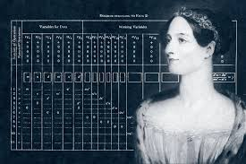

Evolution of Technology
The History
The evolution of technology from Alan Turing's time to the present is a remarkable journey marked by groundbreaking advancements and transformative shifts. Alan Turing, a pioneering mathematician and logician, laid the foundation for modern computing in the 1930s and 1940s with his concept of the Universal Turing Machine. This theoretical construct provided a blueprint for designing computers capable of performing any computation given the right programming and resources. Turing's work on breaking the Enigma code during World War II also demonstrated the practical power of computational machines and algorithms. In the 1950s and 1960s, the development of electronic computers began to take shape. Early computers like the ENIAC and UNIVAC used vacuum tubes and punched cards, marking a shift from mechanical calculators to electronic processing. The invention of the transistor in 1947 at Bell Labs revolutionized computing by making machines smaller, more reliable, and energy-efficient compared to their vacuum tube predecessors. This period also saw the advent of programming languages like Fortran and COBOL, which made it easier for humans to interact with computers and perform complex calculations. The 1970s and 1980s ushered in the era of personal computing. The introduction of microprocessors by Intel in the early 1970s enabled the creation of affordable and compact computers for individual use. This era saw the rise of personal computers like the Apple II and IBM PC, which democratized computing and set the stage for the software industry. Graphical user interfaces (GUIs), popularized by systems like the Apple Macintosh and Microsoft Windows, made computing more accessible and user-friendly. The 1990s and early 2000s marked the expansion of the internet and digital communication. The World Wide Web, invented by Tim Berners-Lee, transformed how people accessed and shared information. The proliferation of the internet, alongside advances in networking technologies and the development of web browsers, enabled rapid information exchange and gave rise to e-commerce, social media, and online communities. This period also saw significant advancements in mobile technology, with the introduction of early smartphones and the evolution of cellular networks. In the 2010s and beyond, technology has continued to advance at an unprecedented pace. The rise of cloud computing has transformed data storage and processing, enabling scalable and on-demand access to computing resources. Artificial intelligence (AI) and machine learning have begun to drive innovations across various sectors, from autonomous vehicles to personalized recommendations. The proliferation of smart devices and the Internet of Things (IoT) has created an interconnected world where everyday objects are embedded with digital capabilities. Furthermore, advancements in quantum computing and biotechnology hold the promise of even more revolutionary changes in the coming decades. From Turing's theoretical work to the present, the evolution of technology has been characterized by an ever-increasing capability for computation, communication, and connectivity, reshaping every aspect of modern life and continuing to push the boundaries of what is possible.
Alan Turning
Alan Turing (1912-1954) was a British mathematician and logician whose pioneering work laid the foundation for modern computing and artificial intelligence. His most famous contribution is the concept of the "Turing Machine," introduced in the 1930s. This theoretical construct provided a formal framework for understanding computation and algorithms. By defining what could be computed and how, Turing's work established the principles underlying computer science and influenced the design of digital computers. During World War II, Turing's expertise in cryptanalysis became crucial. At Bletchley Park, the British codebreaking center, he led efforts to decipher the Enigma codes used by Nazi Germany. His development of the Bombe machine, an electromechanical device designed to break Enigma ciphers, was instrumental in the Allied victory. Turing’s work in cryptography not only shortened the war but also demonstrated the practical applications of theoretical computing concepts. In addition to his contributions to computation and cryptography, Turing made significant strides in the field of artificial intelligence. In his seminal 1950 paper, "Computing Machinery and Intelligence," he proposed what is now known as the "Turing Test," a criterion for determining whether a machine can exhibit intelligent behavior equivalent to that of a human. This test remains a cornerstone of discussions in artificial intelligence and continues to influence research and debates on machine cognition. Despite his groundbreaking achievements, Turing's life was marked by tragedy. In 1952, he was prosecuted for homosexuality, which was illegal in the UK at that time. As part of his sentence, he underwent chemical castration and faced significant personal and professional challenges. Turing died in 1954, with his death officially ruled as suicide. In recent years, his contributions have been widely recognized, and he has been celebrated posthumously. In 2013, he received a royal pardon, and his legacy continues to be honored for its profound impact on computer science, cryptography, and artificial intelligence.

Ada Lovelace
Ada Lovelace, born Augusta Ada Byron in 1815, is widely regarded as the world's first computer programmer. She was the daughter of the famous poet Lord Byron and Annabella Milbanke, but Ada’s passion lay in mathematics and science, subjects her mother encouraged to counterbalance what she saw as the dangerous "poetic" tendencies of her father. Lovelace is most famous for her work on Charles Babbage’s Analytical Engine, an early mechanical general-purpose computer. Although the machine was never fully built during their lifetimes, Lovelace recognized its potential far beyond simple calculations. In 1843, while translating an article on the machine by Italian engineer Luigi Menabrea, Lovelace added a set of extensive notes. These notes included an algorithm designed to be processed by the Analytical Engine, which is considered the first-ever computer program. What set Ada Lovelace apart was her foresight into the broader implications of computing. While others, including Babbage, saw the Analytical Engine as merely a tool for number-crunching, Lovelace envisioned it as capable of handling more abstract tasks, such as composing music or processing text. She described the machine as having the potential to manipulate symbols and make connections in ways akin to human thought, a vision of computing that would only be realized over a century later. Lovelace’s legacy as a pioneering figure in computing has only grown over time. Despite the limited recognition she received during her lifetime, her contributions have earned her posthumous recognition as a trailblazer in computer science. In 1980, the U.S. Department of Defense even named a computer programming language, Ada, in her honor.
Tim Burners Lee
Tim Berners-Lee is a British computer scientist most renowned for inventing the World Wide Web in 1989. While working at CERN, the European Organization for Nuclear Research, he conceptualized a system that would allow researchers to share information seamlessly across networks. His idea centered on linking hypertext documents, making information retrieval easier and more efficient on a global scale. This groundbreaking invention fundamentally transformed how people access and share knowledge, eventually revolutionizing communication, commerce, and technology worldwide. At the core of Berners-Lee's invention are three pivotal technologies: HTML (HyperText Markup Language), URL (Uniform Resource Locator), and HTTP (Hypertext Transfer Protocol). HTML allows for the creation and structuring of web pages; URLs provide a standardized way to identify and locate resources on the internet; and HTTP facilitates the transmission of data between web servers and browsers. Together, these technologies form the essential components of the modern web, enabling billions of people to interact with information effortlessly. In 1991, Berners-Lee launched the first website, hosted at CERN, which explained how the web worked and how others could create their own websites. This marked the beginning of an era of rapid expansion and innovation in the digital world. In 1994, he established the World Wide Web Consortium (W3C) to develop open web standards, ensuring that the web would remain a free and open platform accessible to all. Through the W3C, Berners-Lee continues to advocate for the web’s neutrality, pushing for an open and decentralized internet that protects privacy and prevents monopolies. Throughout his career, Berners-Lee has emphasized the importance of keeping the web open and accessible to everyone. He envisions a web that remains a tool for collaboration, free expression, and global progress, a vision that continues to shape the evolution of the internet today. His contributions have earned him numerous accolades, including a knighthood in 2004, recognizing his profound impact on modern society

World Wide Web
The creation of the World Wide Web is a story of visionary innovation and collaboration that transformed the way people access and share information. The journey began in the late 1980s when Tim Berners-Lee, a British computer scientist working at CERN (the European Organization for Nuclear Research), conceived the idea of a universal information system. Faced with the challenge of managing and sharing vast amounts of research data among physicists worldwide, Berners-Lee proposed a system that would enable users to link documents and resources through a network, creating a web of interconnected information. In 1989, Berners-Lee wrote a proposal outlining the concept of hypertext, which would allow users to navigate between documents via hyperlinks. This idea was further developed into a more detailed proposal in 1990, which he named the "World Wide Web." The core technologies of the Web were introduced in 1991: HTML (Hypertext Markup Language), which structures web content; URI (Uniform Resource Identifier), which provides a way to locate resources; and HTTP (Hypertext Transfer Protocol), which facilitates communication between web browsers and servers. The first website, created by Berners-Lee himself, went live in 1991 and was hosted on a CERN server. It was a simple page that explained the World Wide Web project and provided instructions on how to create web pages and set up a web server. This initial website was instrumental in demonstrating the practical utility of the Web and encouraging others to build their own sites. The rapid expansion of the Web began in the mid-1990s with the development of web browsers such as Mosaic and Netscape Navigator, which made it easier for users to access and navigate the growing number of websites. The introduction of the graphical user interface and the growing availability of internet connections contributed to the Web’s widespread adoption. During this period, the World Wide Web Consortium (W3C) was established by Berners-Lee in 1994 to oversee the development of web standards and ensure the Web’s continued growth and interoperability. The World Wide Web has since evolved into a fundamental aspect of modern life, revolutionizing communication, commerce, and information sharing on a global scale. It has enabled the rise of social media, online shopping, and a vast array of digital services and platforms. The continuous advancement of web technologies, including mobile optimization and semantic web capabilities, reflects the ongoing innovation and adaptability of the World Wide Web, which remains an integral part of contemporary society.